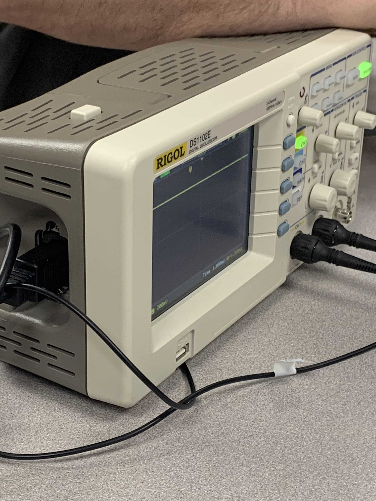
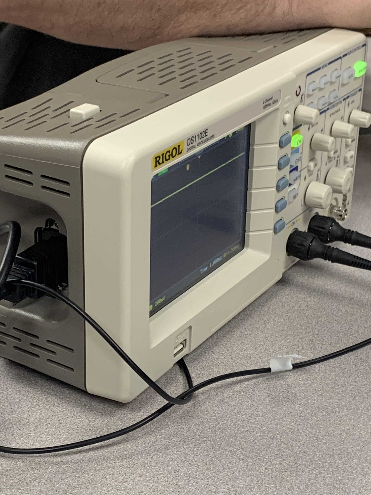
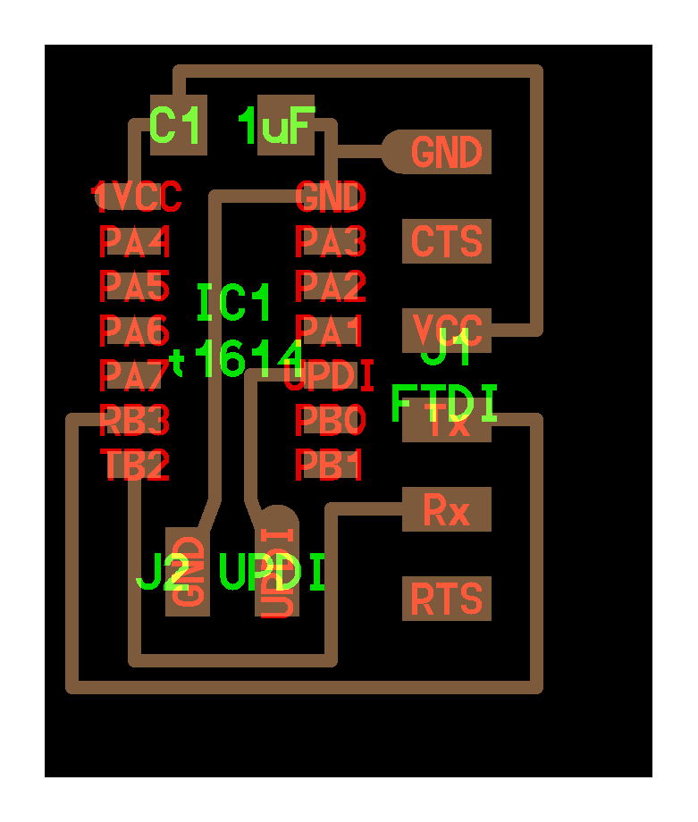
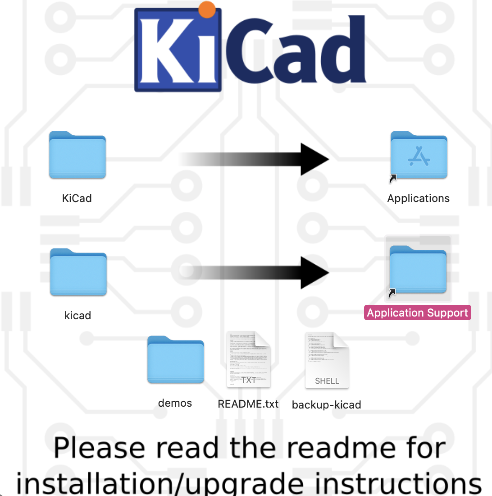
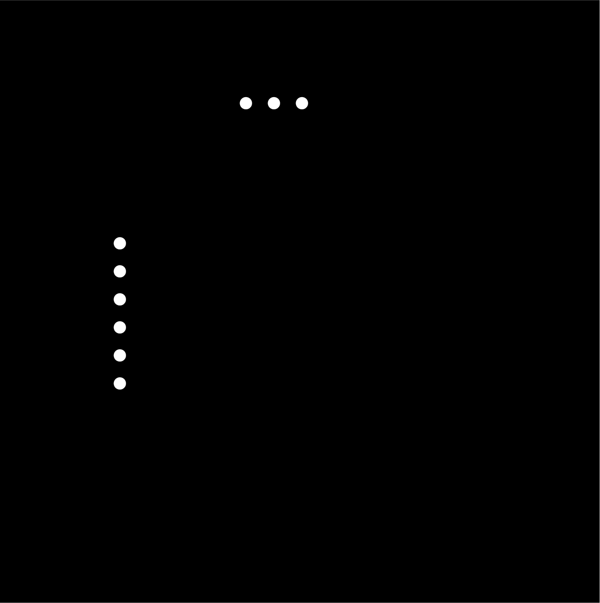

Week 7
Electronics Design.
This week of Fab Academy we have been introduced to electronics design using KiCAD. KiCAD is a software suite for electronic design automation. It facilitates the design of schematics for electronic circuits and their conversion to PCB designs and this helps with the workflow since everything that needs to be done is available right within 1 software. Plus we were able to hook up a few libraries to the software which gave us the chance to basically design or modify any PCB we wanted.
Group Assignment:
- Use the test equipment in your lab to observe the operation of a microcontroller.
Individual Assignment:
- Recreate the echo hello-world board and add a button and LED.
- Check the design rules, make it, and test it
Group Project
In the group project we learnt how to use a multimeter and oscilloscope. These tools can be very helpful in debugging a circuit board. We tested our equiptment on this circuit:

We used the multimeter first, setting it to the DC voltage mode. So with the multimeter we did some basic tests of the readings you can do to test wether the copper is connected as well as a test of the volatge along a path. On the multimeter it was important that the black lead goes to GRD (ground). These were our readings when we placed the red lead at various points(Notice that 5v is the voltage value from the power supply):
A = 5 v,
B = .5 mv,
C = 5 v,
D = 1.68 v.
The next step was to use an oscilloscope. This intrument is signifigantly more complex then the multimeter, but serves to a very similar focus. When we are working with boards that we are programming it is important to see whether or not our board is actually being programmed. On the screen, the oscilloscope showed a graph of the voltage over time.
.

 

Personal Project
Hello World Board:
Fab Academy already has designed an echo hello-world board, however, this one does not have an LED or a button. I need to redesign it to fit this week's assignment specifications. Unlike Week 5, I now had the power of designing my own board.

KiCAD
KiCad is a free software suite for electronic design automation. It facilitates the design of schematics for electronic circuits and their conversion to PCB designs. However, we needed to download an addditional library just to be able to use all the components from this weeks project.
For this week I had to redraw the echo hello-world board, but with an LED and button. Given the components we had available in the Lab, I made my board using an ATtiny1616 and through-hole header pins. Our professor had provided our class with a circuit drawing of the hello-world board.

I initially created a project and started designing by opening the Schemtic Layout Editor. After opening the layout editor, I wanted to add components so I clicked at the "Place Symbol Tool."I realised a bit later that I didnt have all the parts that were needed so Idownloaded and installed 2 additional libraries from the internet. For each of the 2 libraries I also had to seperatley install their symbols and footprints

This is what the fully designed piece looked like:

Once I had a schematic diagram, I opened up the PCB Layout Editor. Here I clicked "Update PCB from schematic". This imported my components and wires which I could then edit. I then connected all the parts making sure that neither of the wires were too close to each other. I even added my Brand name on it

I had to then add the footprints for the pin headers because I was using through-hole instead of surface mount pins. I followed these instructions, to go back to the Schematics Layout Editor and change the assigned footprints for the components. Then I needed an outline for my board so I can cut it out of the PCB after the precision mill finished milling it.

Image processing
From here, I exported the layers individually, and combined, as SVG files. However, I needed to get a seperate file with the holes cut out. Once they are seperated you create a white square send it to the back, and you should have black holes where you need to drill holes and white everywhere else

All the other files from this process can be found here.
MODS
After a lot of experience I had finally conquered MODS and the smoothness of this step just goes to prove it.

Final steps
Finally its time to put the components on. From my experience in the week 5 assignment, putting the biggest pieces last was the best option. However, I had put the connector pins (headers) first because I used wire solder rather than solder paste for them. Reason for this is because using wire solder is stronger and in this case it also can withstand more heat. AFter finishing soldering the board looked like:
After completing my board, I checked it with a multimeter and all of it seemed about right. Then I moved on to coding.
To code it I used a FTDI USB-to-serial cable. We will also later use this cable to connect my board to the computer to send and receive messages between the 2.
I used Fab Academy's echo hello-world code to code my PCB. However, because I use a 1616 as coompared to a 1614 i needed to make a few changes. I also included a few more things. For example it outputs my favourite quote in binary - "There is no light at the end of the tunnel, you make your own" in binary by turning on and off the LEDs. Moreover, to code my PCB, I needed to set up my Arduino IDE to recognize my ATtiny 1616.
After setting up my laptop to code the chip, I used some help from my roommate to code my chip. You can find his website for the same here
{kind=link}
{kind=link}
{kind=link}